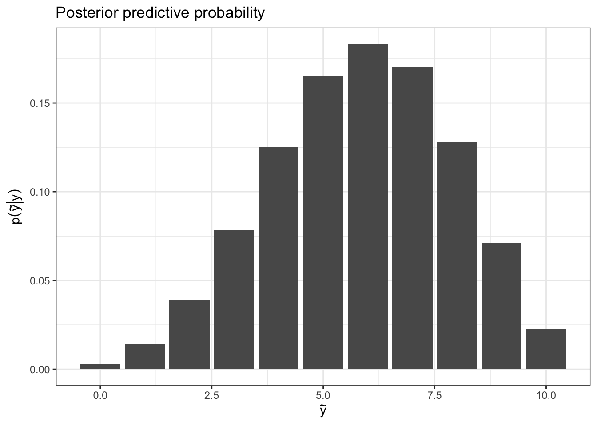

library(tidyverse)
library(latex2exp)Prediction & Intro to Monte Carlo
Load packages:
Prediction example
General social survey (1998)
Setup:
- Suppose \(X_i = 1\) if the ith person is happy. \(X_i = 0\) otherwise.
- Let \(Y = \sum_{i = 1}^{n} X_i\), where \(n\) is the number of people sampled.
- \(Y_i | \theta \sim \text{binomial}(\theta)\) for some fixed \(n\).
- \(\theta \sim \text{uniform}(0, 1)\)
Scenario: We sample \(n = 10\) people. \(y = 6\) are happy. If we sample another \(n = 10\), what is the probability that \(\tilde{y}\) are happy?
We fundamentally want the posterior predictive distribution, \(p(\tilde{y} | y)\).
Following the offline notes, and given conditional independence, we want
\[ \begin{aligned} \int p(\tilde{y} | \theta) p(\theta | y) d\theta &= \int {n \choose \tilde{y}} (\theta)^\tilde{y} (1-\theta)^{n-\tilde{y}} \cdot \frac{1}{\text{B(y + 1, n - y + 1)}}\theta^{y}(1-\theta)^{n-y} d\theta\\ &= {n \choose \tilde{y}} \frac{1}{\text{B(y + 1, n - y + 1)}} \int \theta^{\tilde{y}+y} \cdot (1-\theta)^{(n-\tilde{y}) + (n - y)} d\theta\\ &= {n \choose \tilde{y}} \frac{\text{B}(\tilde{y} + y + 1, 2n - y - \tilde{y} + 1)}{\text{B(y + 1, n - y + 1)}} \end{aligned} \]
where \(B(\alpha, \beta) = \frac{\Gamma(\alpha)\Gamma(\beta)}{\Gamma(\alpha + \beta)}\). We can of course simplify, since this is really a bunch of factorials, but we can also naively use the beta() function in R and push forward.

y = 6
n = 10
# posterior predictive probability of ytilde
probYT = function(ytilde) {
choose(n, ytilde) *
beta(ytilde + y + 1, (2*n) - y - ytilde + 1) /
beta(y + 1, n - y + 1)
}
# construct data frame
df = data.frame(ytilde = 0:10) %>%
mutate(postPredict = probYT(ytilde))
# plot data frame
df %>%
ggplot(aes(x = ytilde, y = postPredict)) +
geom_bar(stat = 'identity') +
labs(x = TeX("$\\tilde{y}$"), y = TeX("$p(\\tilde{y}|y)$"),
title = "Posterior predictive probability") +
theme_bw()Monte Carlo motivation
General social survey from the 90s gathered data on the number of children to women of two categories: those with and without a bachelor’s degree.
Setup:
- \(Y_{i1}\): number of children of \(i\)th woman in group 1 (no bachelor’s)
- \(Y_{i2}\): number of children of \(i\)th woman in group 2 (bachelor’s)
Model:
- \(Y_{11}, \ldots, Y_{n_1 1} | \theta_1 \overset{\mathrm{iid}}{\sim} \text{Poisson}(\theta_1)\)
- \(Y_{12} \ldots, Y_{n_2 2} | \theta_2 \overset{\mathrm{iid}}{\sim} \text{Poisson}(\theta_2)\)
Prior:
- \(\theta_1 \sim \text{gamma}(2, 1)\)
- \(\theta_2 \sim \text{gamma}(2, 1)\)
Data:
- \(n_1 = 111\), \(\bar{y_1} = 1.95\), \(\sum y_{i 1} = 217\)
- \(n_2 = 44\), \(\bar{y_1} = 1.5\), \(\sum y_{i 1} = 66\)
Posterior:
- \(\theta_1 | \vec{y_1} \sim \text{gamma}(219, 112)\)
- \(\theta_2 | \vec{y_2} \sim \text{gamma}(68, 45)\)
We already know how to compute
- posterior mean: \(E~\theta | y = \alpha / \beta\) (shape, rate parameterization)
- posterior density (
dgamma) - posterior quantiles and confidence intervals (
qgamma)
What about…
- \(p(\theta \in \mathcal{A} | y)\),
- \(E~g(\theta) | y\),
- \(Var~g(\theta) | y\)?
What about posterior distribution of \(|\theta_1 - \theta_2\), \(\theta_1 / \theta_2\), \(\text{max} \{\theta_1, \theta_2 \}\)?
Monte Carlo integration
- approximates an integral by a stochastic average
- shines when other methods of integration are impossible (e.g. high dimensional integration)
- works because of law of large numbers: for a random variable \(X\), the sample mean \(\bar{x}_N\) converges to the true mean \(\mu\) as the number of samples \(N\) tends to infinity.
The key idea is: we obtain independent samples from the posterior,
\[ \theta^{(1)}, \ldots \theta^{(N)} \overset{\mathrm{iid}}{\sim} p(\theta |\vec{y}) \]
then the empirical distribution of the samples approximates the posterior (approximation improves as \(N\) increases).
Recall
\[ E~g(\theta)|y = \int_\mathcal{\theta} g(\theta) f_\theta(\theta | y)dx \approx \frac{1}{N} \sum_{i = 1}^N g(\theta^{(i)}) \]
where \(f_x(x)\) is the probability density function for a random variable \(X\).
The law of large numbers says that if our samples \(\theta^{(i)}\) are independent, \(\frac{1}{N} \sum_{i = 1}^N g(\theta^{(i)})\) to \(E~\theta|y\).
Note
Integrals are expectations, and expectations are integrals.
Examples
- \(\theta_1 | \vec{y_1} \sim \text{gamma}(219, 112)\)
- \(\theta_2 | \vec{y_2} \sim \text{gamma}(68, 45)\)
(1) proof of concept: the mean
set.seed(123)
N = 5000
rgamma(N, shape = 219, rate = 112) %>%
mean()[1] 1.95294Pretty close to the true mean, 1.9553571.
(2) posterior of \(\theta_1 - \theta_2\)
set.seed(123)
theta1 = rgamma(N, shape = 219, rate = 112)
theta2 = rgamma(N, shape = 68, rate = 45)
df = data.frame(diff = theta1 - theta2)
df %>%
ggplot(aes(x = diff)) +
geom_density() +
theme_bw() +
labs(x = TeX("$\\theta_1 - \\theta_2$"),
y = TeX("$p(\\theta_1 - \\theta_2 | {y}_1, {y}_2)$"))
(3) \(p(\theta_1 - \theta_2> .5)\)
mean(df$diff > .5)[1] 0.4106
Exercise
- \(\theta \sim \text{uniform}(0, 1)\)
- Let \(\gamma = \log \theta\)
- Visualize \(p(\gamma)\) using Monte Carlo simulation, then show using the change of variables formula and plotting the closed form of the density.
# sample from p(theta)
theta = runif(10000)
# define transform function
f = function(x) {
return(exp(x))
}
# create a df for each plot
df = data.frame(gamma = -7:0)
df2 = data.frame(gammaSamples = log(theta))
# make plots
df %>%
ggplot(aes(x = gamma)) +
stat_function(fun = f, col = 'red', alpha = 0.5) +
geom_histogram(data = df2, aes(x = gammaSamples,
y = ..density..),
fill = 'steelblue', alpha = 0.5)
# Just making the Monte Carlo part of the plot
# in 3 lines
theta = runif(10000)
gamma = log(theta)
hist(gamma)